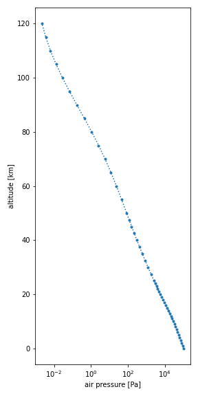
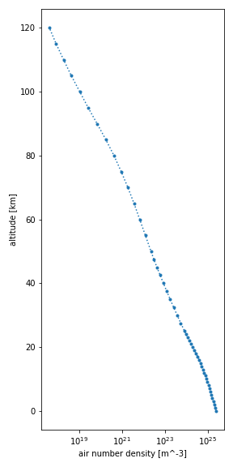
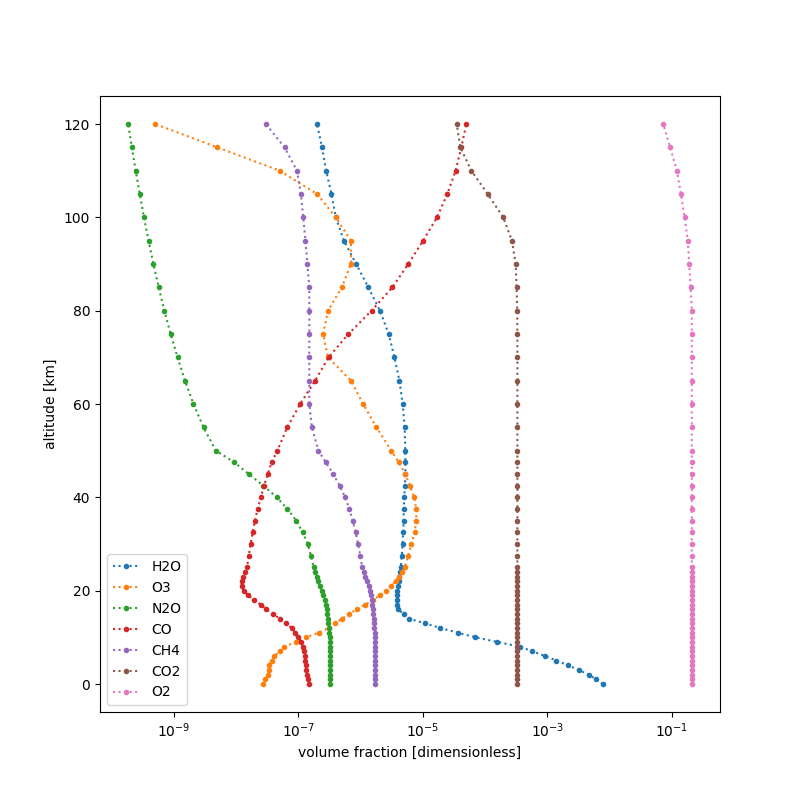

How-to guides¶
Quickstart¶
Make an atmospheric profile using the function :meth:joseki.make.
Use its identifier parameter to specify the atmospheric profile.
For example, make the AFGL (1986) US Standard profile with:
Display the available identifiers with:
If you want, you can save the data set to the disk as a NetCDF file:
Open the data set again using xarray.open_dataset:
The data sets format is described here.
Cells representation¶
To make an atmospheric profile where data variables are given in altitude cells
instead of at altitude levels, set the parameter represent_in_cells to
True:
The resulting data set has a coordinate variable z that corresponds to
the altitude cells center and a data variable z_bounds that indicate the
altitude bounds of each altitude cell, i.e. atmospheric layer.
Advanced options¶
The collection of atmospheric profiles defined by
Anderson1986AtmosphericConstituentProfiles includes volume mixing
ratio data for 28 molecules, where molecules 8-28 are described as additional.
By default, these additional molecules are included in the atmospheric profile.
To discard these additional molecules, set the additional_molecules
parameter to False:
ds = joseki.make(
identifier="afgl_1986-us_standard",
represent_in_cells=True,
additional_molecules=False,
)
The resulting data set now includes only 7 molecules, instead of 28.
Derived quantities¶
You can compute various derived quantities from a thermophysical properties
data set produced by joseki:
- the column number density of each molecule in the data set.
Example:
ds = joseki.make(identifier="afgl_1986-us_standard")
ds.joseki.column_number_density["O3"].to("dobson_unit")
- the column mass density of each molecule in the data set
Example:
python
ds.joseki.column_mass_density["H2O"]
- the number density at sea level of each molecule in the data set
Example:
- the mass density at sea level of each molecule in the data set
Example:
python
ds.joseki.mass_density_at_sea_level["CH4"]
For further details on these methods, refer to the :ref:API reference<api_reference>.
Rescaling¶
You can modify the amount of a given set of molecules in your thermophysical properties data set by applying a rescale transformation:
ds = joseki.make(identifier="afgl_1986-us_standard")
ds.joseki.rescale(
factors={
"H2O": 0.5,
"CO2": 1.5,
"CH4": 1.1,
}
)
In the example above, the amount of water vapor is halfed whereas the amount of
carbon dioxide and methane is increased by 150% and 110%, respectively.
When a rescale transformation has been applied to a data set, its rescaled
attribute is set to True and its history attribute is updated to
indicate what scaling factors were applied to what molecules.
If the scaling factors are such that the volume fractions sum is larger than
1.0 at any altitude, an error is raised.
ds = joseki.make(identifier="afgl_1986-us_standard")
ds.joseki.rescale(
factors={
"O2": 2.0, # invalid
}
)
When executed, the above code will raise a ValueError because the scaling
factor is invalid.
Warning
For some profiles of the afgl_1986-* series, namely
afgl_1986-tropical, afgl_1986-midlatitude_summer and
afgl_1986-subarctic_summer, a ValueError is raised
while rescaling although the scaling factors are valid.
For example, the code below:
will raise a ValueError with a message indicating that the volume
mixing ratio sum is larger than one, although all that we did is
decrease the amount the water vapor by half.
The reason is, that the volume mixing ratio sum was larger than one
before the rescaling transformation, and the transformation was not
significant enough to change that.
The original paper :cite:Anderson1986AtmosphericConstituentProfiles does
not make any comment about the sum of volume fractions being larger than
one for the mentioned profiles.
The suggested way to circumvent this issue is to decrease the amount of a
molecule that is not relevant to your application, e.g. N2 so that
the volume fractions sum is less than one, and apply your original
rescaling transformation:
ds = joseki.make(identifier="afgl_1986-tropical")
ds.joseki.rescale(
factors={
"N2": 0.99,
"H2O": 0.5,
}
)
where the value of the scaling factor for N2 may have to be adjusted
depending on your rescaling transformation.
Plotting¶
Note
For plotting, you will need to install the matplotlib library.
You can easily make a plot of any of the four variables of a dataset, i.e.,
air pressure (p), air temperature (t), air number density (n) or
volume mixing ratio (x):
import matplotlib.pyplot as plt
ds = joseki.make(
identifier="afgl_1986-us_standard",
additional_molecules=False
)
ds.p.plot(
figsize=(4, 8),
ls="dotted",
marker=".",
y="z",
xscale="log",
)
plt.show()



plt.figure(figsize=(8, 8))
for m in ds.joseki.molecules:
ds[f"x_{m}"].plot(
ls="dotted",
marker=".",
y="z",
xscale="log",
)
plt.xlabel("volume fraction [dimensionless]")
plt.legend(ds.joseki.molecules)
plt.show()
